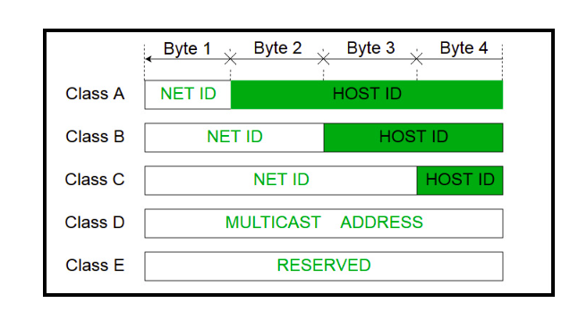

Routing Rules in Hyperblox
Jabir Ali V
## Routing Rules - Way to specify destination for messages that are going in and out to the service slice via delegates - Routing rules are parsed by the delegate - Routing rules are delegate specific, it may change if the delegate type changes - Most commonly we use routing rules for http and http2 delegate --- ## How it works? - When a message reaches to delegate . Its metadata will be compared with the routing rules present - When multiple matches are there, delegate chooses the first match --- ## Parameters in routing rule definition - :delegate -> The network instance involved - :ttype -> The event name involved - :tcmd -> The event name involved - :op -> http operation expected or to be filled - :code -> http code expected or to be filled - :dir -> direction of the message, (in or out) - :tinstance -> the clusterlet instance name --- ## Specifying Instance - `:tinstance` can be static or dynamic - when there is a value specified in routing rules in a format ```js :path => "/api/v1/items/{itemid}" ``` then `:tinstance` can be given like ``` :tinstance => "{itemid}" ``` <!-- A paragraph with some text and a [link](http://hakim.se). --> --- ## Routing rule example ``` rrdef(:NrfRule_00_00,:key1=>:NFRegister_NFUpdate_PUT, :path=>"/nnrf-nfm/v1/nf-instances/{nfInstanceId}", :op=>"PUT",:code=>"", :dir=>"IN",:ttype=>"NRF_C", :tinstance=>"{nfInstanceId}", :tcmd=>"NFRegister_NFUpdate_PUT", :delegate=>"SBI_DELEGATE") ``` --- ## No need of Routing rule for response - The delegate will infer the response rules - We will have to follow a strict rule to make it work - If event name is "Add_Item" then the response event name should be one of the http response messages - Add_Item_200_OK - Add_Item_204_No_Content - All the possible responses can be found in function `code2msgstr()` in path ``` sdn/userlevelipstack/http_delegate.cpp ``` --- ## To send message to outside - we need a routing rule in OUT direction - need to set __params.httpcode in the sendmsg to delegate <!-- <section> --> <!--  --> <!-- </section> --> <!-- <section> --> <!-- <img src="https://sp-ao.shortpixel.ai/client/to_webp,q_glossy,ret_img,w_575/https://embeddedgeeks.com/wp-content/uploads/2020/06/ip_Class-1.png" height="500" width="1600" > --> <!-- </section> -->